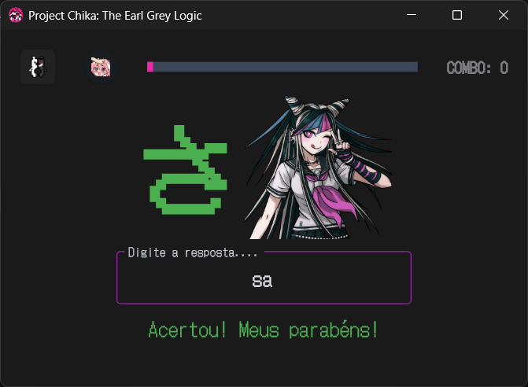
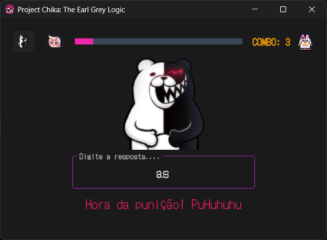
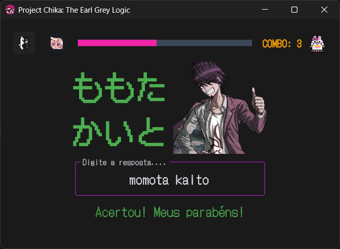
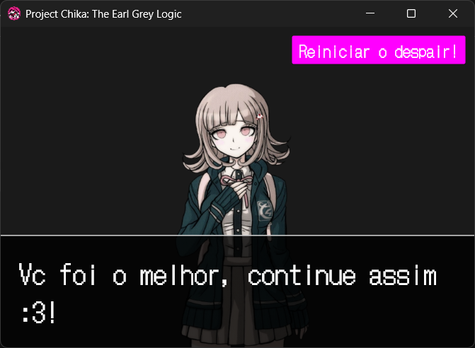

Project Chika: The Earl Grey Logic
Status atual: Em transição para nova engine (Godot) para acompanhar o crescimento do escopo do projeto.
Objetivo e descrição:
Aplicativo gamificado de flashcards focado na retenção de vocabulário de japonês (Hiragana/Katakana) e inglês. Desenvolvido para resolver problemas de UX/UI encontrados em ferramentas tradicionais como ankidroid, utilizando um sistema de repetição, feedback visual imediato e mecânicas de combo. Inspirado na franquia Danganronpa e estética de suas HUD.
Tecnologias utilizadas:
- Python & Flet (Lógica e interface gráfica)
- PyInstaller (Compilação do Executável)
- Gerenciamento de Estado nativo e Manipulação de Áudio/Imagem.
Galeria do Projeto:



